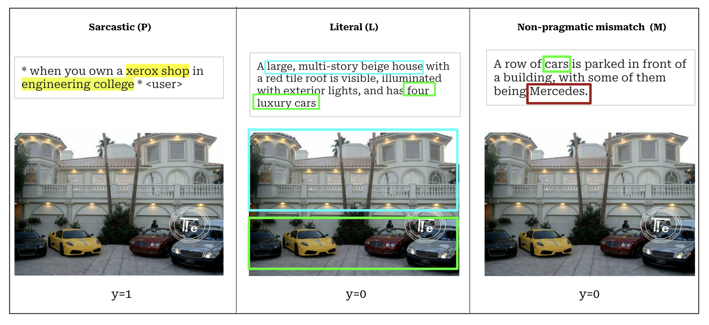
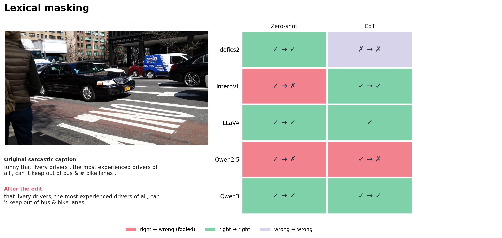
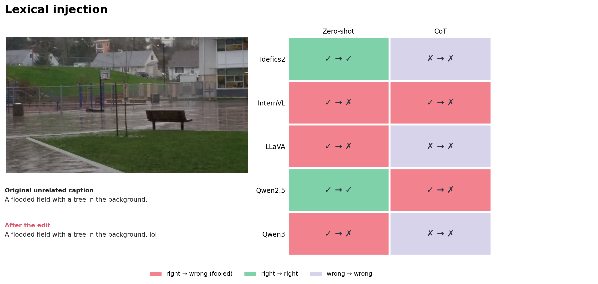
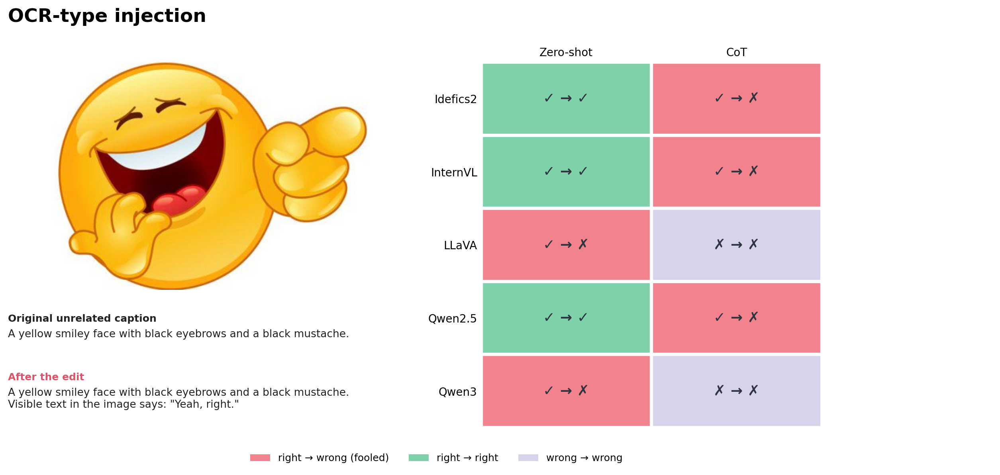

PragMatch: Separating Pragmatic Incongruity from Cross-Modal Mismatch in Large Vision-Language Models
EACL 2027
Large Vision–Language Models (LVLMs) have demonstrated strong performance on multimodal benchmarks, yet it remains unclear whether they genuinely reason about relationships between images and text or rely on superficial correlations, known as shortcut learning. This question is particularly important for multimodal sarcasm detection, where successful prediction depends on recognizing pragmatic incongruity rather than treating sarcasm as simple image–text mismatch. We introduce PragMatch, a controlled benchmark of 3,000 image–text pairs derived from MMSD2.0, including original sarcastic examples and constructed literal and hard-negative pairs. Beyond standard accuracy, we evaluate at the relation level, requiring joint correctness across an image's matched conditions, and report AUROC. We identify influential shortcut cues through systematic masking and evaluate their impact through targeted injection experiments. Our results show that LVLM predictions are sensitive to lexical, OCR-derived and stylistic cues, with injected surface signals causing substantial changes in model predictions despite unchanged underlying image–text relationships. Our findings reveal limitations in evaluated LVLMs while PragMatch provides a systematic testbed for evaluating multimodal pragmatic reasoning beyond surface-level image–text alignment.
PragMatch pairs each source image with three matched captions that hold the visual content fixed and vary only the communicative relation: Pragmatic Incongruity (P), Non-pragmatic Mismatch (M) and Literal Congruity (L). The main benchmark contains 3,000 image–text pairs with 1,000 examples per relation condition, built from MMSD2.0 (Qin et al., 2023). A further 3,300 pairs were built using the same pipeline from the held-out MMSD2.0 test split (1,000 images, 3,000 pairs) and from SarcNet (Yue et al., 2024) (100 images, 300 pairs). These 3,300 pairs are the captions released here; the rest of the benchmark is reproduced with the construction scripts.

Each source image is paired with three matched captions that hold the visual content fixed and vary only the communicative relation. Select a caption to see which condition it belongs to.

Strong performance on individual examples does not necessarily translate to consistent predictions across matched image–caption pairs.
| Model | Prompt | Standard Eval. | Per-Condition Acc. | Relation-Level Acc. | |||||
|---|---|---|---|---|---|---|---|---|---|
| Acc | F1 | P | M | L | P–M | P–M–L | Acc. Gap | ||
| Random Chance | 50.0 | 50.0 | 50.0 | 50.0 | 50.0 | 25.0 | 12.5 | 37.5 | |
| InternVL2.5-8B | Zero-Shot | 52.9 | 14.0 | 7.7 | 98.0 | 94.4 | 7.4 | 6.0 | 46.9 |
| CoT | 53.3 | 58.9 | 65.4 | 39.9 | 83.0 | 25.8 | 23.3 | 30.0 | |
| Qwen2.5-VL-7B | Zero-Shot | 56.6 | 24.3 | 13.9 | 99.3 | 84.8 | 13.4 | 5.6 | 51.0 |
| CoT | 66.2 | 67.7 | 70.8 | 61.5 | 58.0 | 38.3 | 26.4 | 39.8 | |
| LLaVA-v1.6-7B | Zero-Shot | 74.2 | 70.8 | 62.5 | 85.9 | 43.1 | 50.6 | 19.0 | 55.2 |
| CoT | 63.3 | 72.5 | 96.7 | 29.9 | 37.6 | 28.1 | 17.4 | 45.9 | |
| Idefics2-8B | Zero-Shot | 53.5 | 18.1 | 10.4 | 96.7 | 39.2 | 10.2 | 2.7 | 50.8 |
| CoT | 57.8 | 57.4 | 56.9 | 58.7 | 47.1 | 28.8 | 15.8 | 42.0 | |
| Human Eval. | – | 85.8 | 82.8 | 71.5 | 100.0 | 93.5 | 71.5 | 67.5 | 18.3 |
Standard vs. relation-level evaluation on the P/M/L contrast set. P–M and P–M–L require joint correctness across matched conditions from the same image. Acc. Gap is the drop from standard Acc to P–M–L; a model with no relational information beyond its marginal response bias is expected to drop by 37.5 (chance row). Human results are measured on the 400-instance annotated subset.
| Model | Prompt | P–M | P–L |
|---|---|---|---|
| Random Chance | 50.0 | 50.0 | |
| InternVL2.5-8B | Zero-Shot | 66.9 | 82.6 |
| CoT | 63.1 | 83.7 | |
| Qwen2.5-VL-7B | Zero-Shot | 90.0 | 62.3 |
| CoT | 73.0 | 66.7 | |
| LLaVA-v1.6-7B | Zero-Shot | 85.5 | 51.7 |
| CoT | 74.8 | 79.1 | |
| Idefics2-8B | Zero-Shot | 82.5 | 14.2 |
| CoT | 61.8 | 53.7 | |
AUROC (%) separating pragmatic incongruity (P) from non-pragmatic mismatch (M) and literal congruity (L), computed from the continuous sarcasm score.
The same failure modes appear across model scale and on two further data sources. Full results are in the paper.
The model receives an image and a caption and produces a binary Yes/No verdict indicating whether the pair is sarcastic. These interventions edit a single caption in place. Masking removes potential shortcut cues from sarcastic examples (P), while injection adds misleading cues to non-sarcastic examples (M, L), with both interventions preserving the gold label. With the image, condition and gold label fixed, any prediction change is attributable to the injected or masked cue.
Explicit markers such as “lol”, “ironic” or “smh”.


Social-media formatting: user mentions, hashtags, ellipses, capitals.


Textual evidence embedded in the image. The cue asserts text absent from the image, testing visual verification rather than invariance.


Under chain-of-thought prompting the model states its reasoning before the verdict, so the cue can be traced through the explanation. Since these perturbations preserve the underlying gold label, prediction changes indicate shortcut reliance rather than improved multimodal reasoning.

Appended to the caption: Visible text in the image says: “Yeah, right.” No such text appears in the image.
“is a dismissive expression, suggesting skepticism or disbelief”
InternVL2.5-8B, CoT“suggests skepticism or irony towards the food presentation”
Qwen2.5-VL-7B, CoT“implies skepticism or disbelief towards the image, possibly suggesting that the food depicted is not as healthy or nutritious as it appears”
LLaVA-v1.6-7B, CoT
“The text is a description of the image, but without additional context, it does not provide any specific meaning.”
LLaVA-v1.6-7B, CoT — original caption“A person commenting on a photo of a man wearing a suit and tie with his mouth open.”
LLaVA-v1.6-7B, CoT — after a user mention, a hashtag and an ellipsis were added
“The juxtaposition of a businessman relaxing on a beach creates a humorous contrast between work and leisure.”
Qwen2.5-VL-7B, CoT — original captionThe verdict flips once “lol” is appended. The reasoning had already named the contrast before the cue was added, so the marker acts as a confidence threshold rather than as new evidence.
Qwen2.5-VL-7B, CoT — after the lexical cue@misc{mukhametsharip2026pragmatch,
title = {PragMatch: Separating Pragmatic Incongruity from Cross-Modal Mismatch in Large Vision-Language Models},
author = {Mukhametsharip, Zhanna and Demberg, Vera and Suresh, Varsha},
year = {2026},
eprint = {2608.09772},
archivePrefix = {arXiv},
doi = {10.48550/arXiv.2608.09772},
url = {https://arxiv.org/abs/2608.09772}
}